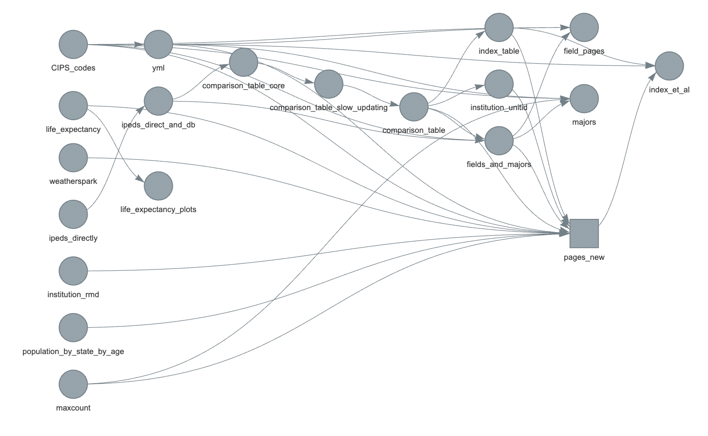
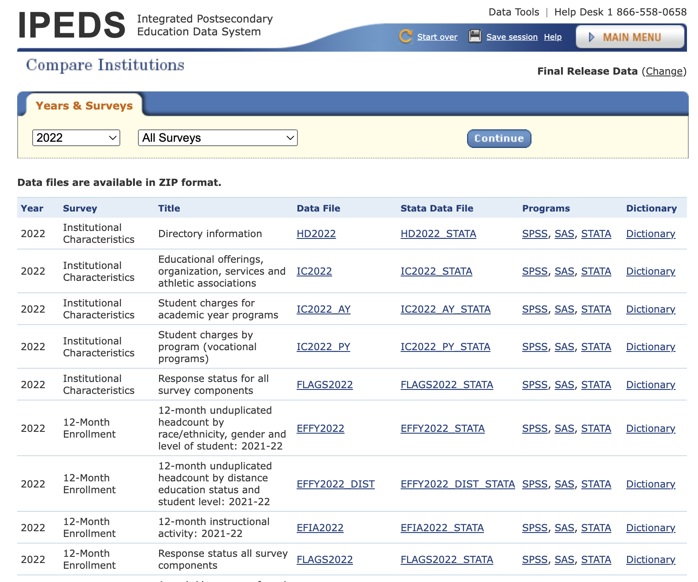
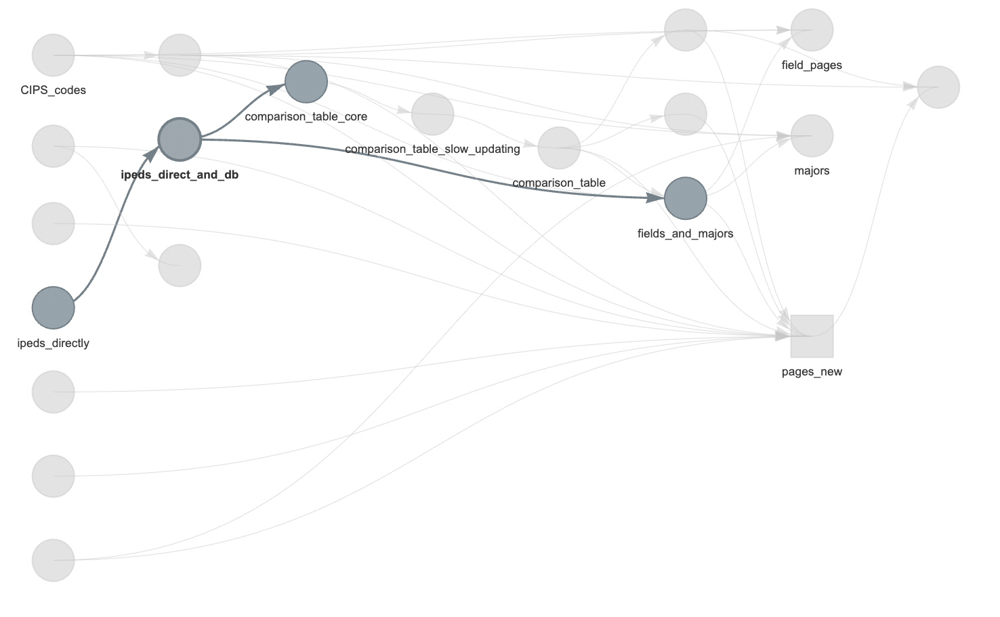
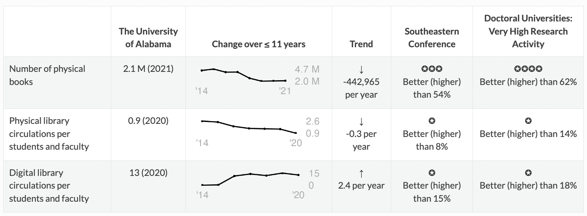

Last year, one of my kids was a junior starting to look at colleges. Picking a college is a big deal; when I get stressed, I like data: my security blanket is a big matrix. There are sites that allow you to compare colleges, but they often use weird metrics (how do provosts rate other colleges), don’t often have a nice table for comparison (turns out some of them put public data behind a paywall, too), and omit some important information (are the instructors used in the student-to-instructor ratio tenure track faculty (who have stability in their jobs) or more contingent faculty who might have to scramble to make ends meet semester to semester?). So I decided to gather data: initially I just wanted to get a table, but then thought, well, it woudn’t be that much harder to put it online, and then… it snowballed into the current site at https://collegetables.info/ with 13,424 pages (including one page for every college and every major). It also was featured in a column by Ron Lieber in the New York Times.
1 Overview
- I use R to gather data from the US government and other sources and make it into a giant table on schools as well as individual pages for each school (and separate pages on fields and majors). There are lots of small plots, too.
- You can see all the packages used here.
- I use
targetsto manage the workflow. - I use
rmarkdownto make the individual pages. crosstalkis used to dynamically filter the table and maps.- GitHub pages to host all the individual pages.
- Sensible structure for the pages: the ID number for Johns Hopkins is 162928, so its page is https://collegetables.info/162928.html; PhD programs in general history are at https://collegetables.info/majors_Doctorate_History_General.html.
2 Targets
I knew that running this could take a while so having some way to do a workflow and cache completed steps would be important. The targets package (authored by William Michael Landau of Eli Lilly, package part of ropensci, paper at https://joss.theoj.org/papers/10.21105/joss.02959) is a good way to do this (I used to use targets’ predecessor, drake). The basic idea is that you have a workflow that is a directed acyclic graph (DAG) of steps, and you can run the workflow and it will only run steps that need to be run. It also caches results, so if you change something, it will only rerun the steps that need to be rerun.
Here is the final workflow for the site:

The main things we care about are the pages_new square on the right (which has one page for each college) and the field_pages, majors, and index_et_al circles which represent pages for fields, majors, and things like the index and about pages. Information flows from the left to the right until the website is all generated.
3 Main data
The US National Center for Education Statistics (NCES) has an Integrated Postsecondary Education Data System (IPEDS) that has info on postsecondary schools: schools that students enroll in after high school. It includes colleges and universities, seminaries, trade schools, and more. They have one dataset per year stored as a Microsoft Access database which turned out to be hard to convert (and I didn’t want to buy MS Access). They also have individual data files per year. Here is a subset of files from 2022:

Files are in csv; there is also a data dictionary file in Excel with more info on what each column and states within it means: for example, that “LOCALE” in table “HD2022” means “Locale codes identify the geographic status of a school on an urban continuum ranging from large city to rural” and that code 12 means “City: Midsize”, 31 means “Town, Fringe”, etc.
To get the files, I first made a list of all the file name types (admissions data are in ADM2021, ADM2020, etc.): function GetIPEDSNames() stores this (functions without a package:: prefix are ones written for the workflow; links go to the function source) – it stores the abbreviations in a vector, with better descriptions of the files as names of the vector.
I then try to get the data files for each year, download them, and do some basic processing using GetIPEDSDirectly(). Each file is in a zipped directory (which may include multiple files, for example if there is both the original file and a later revised one). I also download the data dictionary. The correct file is loaded (using readr::read_csv unless the file is too large, when I use arrow::read_csv_arrow), the data dictionary is loaded with readxl::read_excel, and then the data dictionary is used to give columns and entries more informative names. These are all then saved as csv files in a local directory.
This is the ipeds_directly step in the highlighted workflow below.

I then use AggregateDirectIPEDSDirect() to load all the files and store them in an SQLite database (yes, I probably should have just paid for Microsoft Access and gotten the original files in this format).
The next step is creating a massive table (comparison_table_core): one row per institution per year with only the columns I might care about. It’s 86798 rows by 890 columns, using 669.9 MB of memory. One very nice feature of IPEDS data is each institution having a unique UNITID, allowing stitching together of data from different tables and even sometimes different sources. Things like institution names can be duplicated, but the UNITID is unique.
The above steps are the main difficult ones, and I’m omitting various details (handling errors in the datasets, odd formats, etc.). But we have the main data! Info on majors and fields is similar.
4 Additional data
Another aspect missing from IPEDS data and many college ranking sites is the overall social and natural environment. Things like access to health care procedures, gun regulations, and more are changing and may change into the future. Other things of interest are whether a college is in a desert or forest, how far it is from mountains (one of my kids was interested), and even life expectancy (hopefully not relevant to undergrads, but for people choosing to build a career at an institution, this might be useful info). A lot of info is aggregated at state level (like Erin Reed’s risk of anti-trans legislation map or the Guttmacher Institute’s abortion access map), making adding this to the massive table easy; other data like biome or distance to mountains could be per location. A series of functions append info on these various factors to the main table.
I have my own views on which factors and in which directions are important, but I wanted to make the site neutral: someone can filter for colleges in states with high or low proportion of US reps who vote in favor of protecting access to contraception, for example, with no default ordering put in place by me.
gmbaR was essential in the distances to mountains calculation.
There are other sources of information I would like to include on social climate (even down to the campus level), but many do not allow reuse of their data, and I wanted to respect their wishes.
5 Individual pages
Parametric rmarkdown is used for institution pages. Rmarkdown was developed by Yihui Xie and builds on from work by John Gruber (markdown) and John McFarlane (pandoc). Rmarkdown lets you write in text with easy to read formatting and insert blocks of code that can be run when compiling the document. Parametric rmarkdown lets you pass arguments into the document: you could have a template of a report and have it pass in company info: “Over the past quarter stocks in company_name have changed by percent_change, but this is not a guarantee of future stock motion.” You can also have it embed plots or tables. Quarto is in some ways a successor to rmarkdown (I use it for my personal website), but when I was developing collegetables quarto was new enough that I encountered some issues.
For each institution page, I use the template _institution.Rmd. Its header includes the following parameters:
params:
institution_name: "nothing"
institution_long_name: "nothing"
institution_id: "nothing"
comparison_table: "nothing"
spark_width: 200
spark_height: 60
weatherspark: "nothing"
index_table: "index_table"
life_expectancy: "nothing"
population_by_state_by_age: "nothing"And then within the body of the template it includes text and some functions to compute info for tables and plots as well as to pass in notes. For example, if the focal institution’s enrollment is decreasing over time, a note is prepended to the output document. Not all notes are bad, but they are things that people might want to look into.
Then the RenderSingleInstitutionPage() function does a basic loop to pass in information to create the page for each institution. Each page has lots of graphs, as well as embedded things like some javascript libraries. To save on space, I use the self_contained: false argument in the header YAML: that way all the files are not embedded in each page. I also make the graphs as separate files to load (though I might have javascript render them on the fly in the future: I wasn’t satisfied with the information density of the graphs available in javascript when I was first doing them). Alt tags for each image are also generated within the rmarkdown file for improved accessibility.
Getting the initial data is done infrequently; changing the institution pages is more frequent as I tweak something or as one of the state-level datasets changes. So much of the time is spent on re-rendering the institution pages. I now have it in targets do this as a map so if it stops halfway through, it can pick up with the next institution rather than restarting:
tar_target(
pages_new,
RenderSingleInstitutionPage(institution_unitid, comparison_table, fields_and_majors, maxcount=maxcount, CIPS_codes=CIPS_codes, weatherspark=weatherspark, yml=yml, index_table=index_table, life_expectancy=life_expectancy, population_by_state_by_age=population_by_state_by_age, institution_rmd=institution_rmd),
pattern=map(institution_unitid)
),6 Field and majors pages
I also wanted pages on every field and major to let people drill down and search: if I want to major in computer science, which universities are putting out graduates?
I’m still not happy with the soluton, but I made one page of all the major fields of study (https://collegetables.info/fields_overview.html) so people can do full text search (or it might pop up a general search engine), then they can did down into the individual fields (i.e., https://collegetables.info/Library_Science.html). They can then dig further down into degrees by majors (https://collegetables.info/majors_Doctorate_Astronomy.html). I’ve thought of using a treemap or other way to visualize the categories, but it’s hard because the basic level of fields has 48 large categories and 2321 fields within those. This area is probably not as useful for undergrads (who might not know their major in fine detail yet) but could be good for grad students looking to specialize (i.e., “where can I get a Masters in forestry?”: https://collegetables.info/majors_Masters_Forestry_General.html, though don’t forget the separate degree of urban forestry).
7 Interactive home page
For the home page with a table, I wanted to have:
- A table of all the schools
- A way to filter the table
- A way to show or hide columns
Also, any table needs to have a default ordering. Visitors will want to see colleges they know early in the table, so I needed some way to sort.
Psuedoranking = (100 - Admission %) + Yield % + 6-yr grad rate + 10*log1p(Number of undergrads) + 10*log1p(Number of tenure-stream faculty)This is arbitrary, but it weights colleges by how many dreams they crush selectivity of admissions, whether students who are admitted choose to go there, if those students graduate, how big the school is, and how they are investing in faculty.
For the main table, I use reactable to make one that can work on different screen sizes and have filtering and sorting, incluing showing or hiding sets of columns. I use crosstalk to allow filtering of the table to also filter the map, which is made in ‘leaflet’.
8 Hosting
I use GitHub pages to host the site. It’s stored in two repositories: https://github.com/bomeara/collegetables_source for the source code and https://github.com/bomeara/collegetables_site for the rendered site (I originally had it in one, but it’s a lot of blobby files for git to deal with, and it allows me to separate the development and production branches).
9 Learning
I work in higher ed, so I thought I knew a fair bit about the higher ed landscape going in. However, a few things surprised me:
- “Traditional” isn’t: Our conventional view of college is it’s a four-year experience in fancy buildings, students live in dorms, tenured faculty walk the halls. Harvard, Berkeley, and the like. But a huge proportion of undergrad degrees are coming from places like Western Governors University, which has 108,000 undergrads, three times as many as UC Berkeley. Yet one of the trade publications for higher education, the Chronicle of Higher Education, mentions “Western Governors University” 362 times, Berkeley 6,442 times, and the even smaller Harvard 14,735 times. Undergraduate enrollment isn’t the only component of higher education: research and other creative activities, service to the community (including public scholarship, ag outreach, and more), commercial spinoffs, graduate education, and more are all important and often are a focus at the more famous schools. But even in discussion of undergrad education, schools affecting lots of students remain not a major focus. (Also, “a four-year experience” is often a lie: the graduation rates commonly reported are six-year graduation rates, and many, many students take longer than the nominal four years for a bachelors degree. Families, look at the four- and six-year grad rates before yelling at your students for taking too long).
- Ignore sticker price: Listed tuitions aren’t what many people pay, and traditional knowledge of what schools are “cheap” versus “expensive” are often wrong. For example, what’s cheaper, U. of Oklahoma or Princeton? For a family making $30K-48K a year getting federal aid, the average cost of Oklahoma is $16,097 but for Princeton it’s $4,502. There are all sorts of things that affect cost (including state aid, institutional aid, loans versus grants, and more), but the sticker price is not a good guide. To help make people think about this, I added a comparison to “expensive” Harvard to every institution page.
- Rise in disabilities: for example, at Yale the percentage of students with disabilities went from 6% in 2015 to 22% in 2021. Others have reported on this, but it really jumped out of the data.
- Lack of information on mental health resources: mental health matters a lot in college. What’s the ratio of therapists to students? What’s the wait time to get an appointment? Is there a cap on sessions? I could not find data on this.
- Disappearance of books: many universities seem to be shrinking libraries. Physical circulation is also decreasing, while digital increases. For example, here’s the data for U. of Alabama:

It still has a lot of books, and the number has become stable, but there was a longer term decrease in their collections size. The use of physical collections is decreasing (I divide by the number of faculty and students to get an estimate normalized by university size): on average, every student or faculty member there seems to check out less than one physical thing a year. * There are many small schools. For example, there are many schools for hair styling. The beauty of parametric rmarkdown is that including these takes no extra work, and it might help somebody.
10 Future
My elder kid is applying to colleges now (Fall 2023); they hopefully won’t need this again until they start thinking about potential law / med / theology / grad / etc. schools. My younger kid is only a freshman in high school, so still has some time. I’ll keep poking at the site, though.
I’d love to get more data on life at the colleges: how involved are students in club activities, are fraternities or sororities a big part of campus culture, etc. Mental health resources would also be good. There are data on crimes, but we know underreporting is a huge problem: I worry that the schools that look “worst” for some crimes might be the ones that actually have earned the trust of survivors to report.
11 Thank you
This would have been impossible without freely available open federal data; I also really appreciate the efforts of people who compiled data at the state level, especially about laws that can affect many. The R ecosystem of packages, including well-written documentation and answered questions online, was also essential. rOpenSci and Posit (formerly Rstudio) were key players in a lot of the important packages. Thanks to my kids for beta-testing.
Note that nothing on the site reflects the views of any of my past, present, or future employers, nor any granting agencies (this was all done in my spare time). It’s had benefits, though, in improving my R and sqlite skills, which does help my day job – I’m actually finishing up a grant proposal using similar techniques (but more in my core research area of evolutionary biology).
To subscribe, go to https://brianomeara.info/blog.xml in an RSS reader.
Citation
@online{o'meara2023,
author = {O’Meara, Brian},
title = {13,000 Page Site with {Rmarkdown} and Targets},
date = {2023-10-28},
url = {https://brianomeara.info/posts/collegetables},
langid = {en}
}